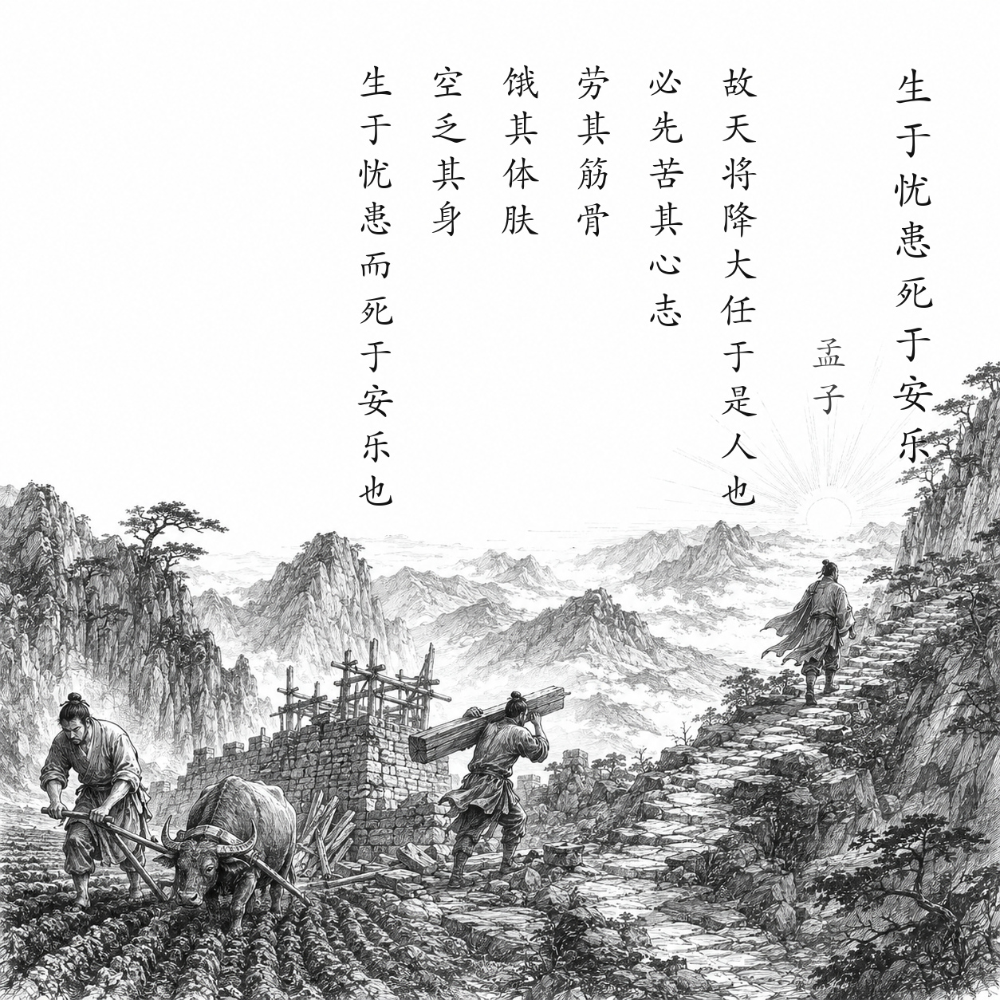

战国 · 孟子及其弟子
生于忧患，死于安乐
舜发于畎亩之中，傅说举于版筑之间，胶鬲举于鱼盐之中，管夷吾举于士，孙叔敖举于海，百里奚举于市。
故天将降大任于是人也，必先苦其心志，劳其筋骨，饿其体肤，空乏其身，行拂乱其所为，所以动心忍性，曾益其所不能。
人恒过，然后能改；困于心，衡于虑，而后作；征于色，发于声，而后喻。
入则无法家拂士，出则无敌国外患者，国恒亡。
然后知生于忧患而死于安乐也。
白话翻译
舜从田野中兴起，傅说从筑墙劳役中被选拔，胶鬲从贩卖鱼盐中被举用，管仲从狱官手中获释任用，孙叔敖从海边被提拔，百里奚从市场被赎回任用。
所以上天要把重大责任交给一个人，往往先使他的内心受苦、筋骨劳累、身体饥饿、生活贫困，做事总受阻挠，以此震动心志、磨炼性情，增加原来不具备的能力。
人常常犯错，然后才会改正；内心困顿、思虑阻塞，随后才奋起；这些情绪显露在脸色和声音里，旁人才会明白。
一个国家若在国内没有守法度、能辅佐君王的贤士，在国外没有敌国和外患，往往会灭亡。
由此才明白：忧患能使人和国家奋发而生存，安逸享乐却可能使其衰败灭亡。
为什么写这篇古诗文
本文出自《孟子·告子下》。开头列举六位由困顿中被任用的人物，再从个人成长推到国家存亡，论证压力与磨炼能激发能力，缺少内外警醒则容易衰败。它强调的不是“吃苦必然成功”，而是人在困境中反省、调整和承担责任。
关于作者
孟子（约前372—前289），名轲，邹人。他长期游说诸侯推行仁政，晚年与弟子整理学说。《孟子》既保存其政治主张，也展现其善于铺陈、排比和辩论的语言风格。